The Fibonacci Sequence and the Golden Ratio
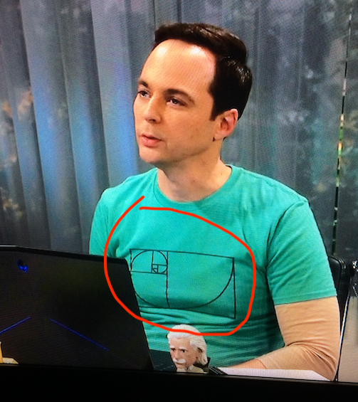
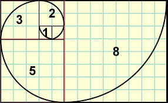
That image on the shirt that Sheldon is wearing has a special meaning. Anyone that is familiar with the Fibonacci Sequence knows immediately the significance of that spiral and how it is created. In this article you too will know about this spiral, how it is created and some other interesting consequences of the Fibonacci Sequence.
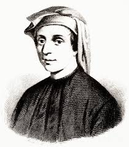
Since Leonardo lived 800 years ago, there are only maybe two portraits of him. All of the other images you may find of him are just copies of this one. His name, Leonardo Pisano Bigollo has been morphed several times. Back then names were constructed by adding the name of the province that a person came from. In Leonardo's case, he was born in Pisa, hence the name "Pisano". His father was nicknamed "Bonaccio" which means "good natured". In the early 1800's an Italian historian morphed the name into Leonardo Fibonacci, which means son of Bonaccio. (Just like MacGregor means son of Gregor).
Whatever you want to call him, Leonardo Fibonacci or just Fibonacci was a major influence in bringing the number system that we presently use to the west from India. Imagine trying to do calculations that involve decimal places using a system that did not employ numerals and the place system. The concept of zero launched western science into a huge era of discovery during the middle ages.
Long before Fibonacci wrote his book, he solved a problem that involved rabbit breeding. He wanted to calculate how many rabbit pairs he would have over time if he were to start with just two newborns. He started with the following assumptions:
- Start with two newborn rabbits, one male, one female.
- The rabbits take one month to mature. After one month they are able to breed.
- Each female rabbit gives birth to one male and one female every month after maturity.
- Over the months of the experiment all rabbits survive.
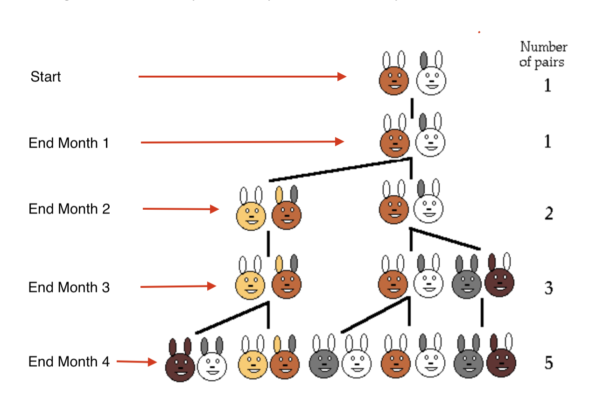
The image on the left shows what happens during only a four-month period. We start with two newborn rabbits (one pair). One is brown with white ears and the other is white with one gray and one white ear.
- After one month we still have one pair, but they are now mature and can mate. It takes one month to germinate.
- After two months we still have the original pair, but they have produced another pair. There are now two pairs. The newborns will take a month to mature, but the original pair will mate again.
- After three months, the original pair that mated in month two give birth to another pair. There are now three pairs. The first set of offspring are now mature and mate.
- After four months, there are two more newborn pairs. There are now five pairs.
If the rabbits were to continue this pattern, the number of pairs at each month could be written as: 1 1 2 3 5 8 13 21 34… In mathematics any list of increasing numbers is called a sequence. A particular number in the sequence is called an element of the sequence. Now there is a pattern to the elements in the sequence. For example, choose any element in the sequence. Say we choose the element whose value is 21. Then the element whose value is 21 is the sum of the two previous elements in the sequence. That is, 21 = 13 + 8. Try the element whose value is 34. We see that 34 = 21 + 13. This property is true for any element in the sequence except for the first and second elements.
If we were to develop a mathematical shorthand notation for this sequence, we would say:
Let the notation Fn represent the nth element in the sequence. We define the first two elements by F1 = 1 and F2 = 1. Then the nth element can be calculated from the previous two elements by the formula: Fn = Fn-1 + Fn-2.
It may be easier to understand the notation if we were to put the first nine elements of the sequence
in tabular form:
F1 = 1
F2 = 1
F3 = 2
F4 = 3
F5 = 5
F6 = 8
F7 = 13
F8 = 21
F9 = 34
So, for example, if we wanted to calculate F10, the 10th element in the sequence, we would use our formula
Fn = Fn-1 + Fn-2 where n = 10:
F10 = F9 + F8 = 34 + 21 = 55
Just to finish off the rabbit experiment, if you are interested in how many pairs there would be after
one year, two years, or three years:
F12 = 144
F24 = 46,368
F36 = 14,930,352
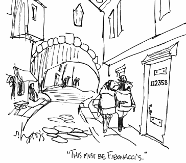
For future reference, the above special sequence has since been called the Fibonacci Sequence.
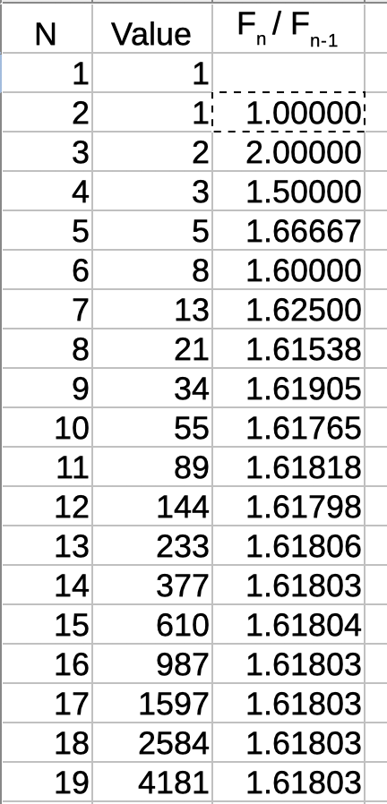
Now that we have established what a Fibonacci Sequence is, let's look at some properties and consequences of this discovery.
Mathematicians like to find patterns in things. The first pattern to spot involves the ratio of two consecutive elements in the Fibonacci Sequence. If we divide each Fn element value by Fn-1 value we get the table on the left. The first column labeled N is the number of the element in the sequence. The second column is the value of the nth number in the sequence (the Fibonacci number), and the third column labeled Fn / Fn-1 is the ratio of two consecutive Fibonacci numbers rounded to 5 decimal places.
So:
F2 / F1 = 1 / 1 = 1
F3 / F2 = 2 / 1 = 2
F4 / F3 = 3 / 2 = 1.5
F5 / F4 = 5 / 3 = 1.66667
And if we skip down to the 16th and 15th elements:
F16 / F15 = 1.61803
And after that, all the ratios are the same, namely 1.61803.
The calculations of the Fibonacci numbers together with their ratios were done on a simple spreadsheet. You can create your own spreadsheet and play with the numbers. You can construct the spreadsheet by creating three simple formulas, one for each column:
- In the first row enter the headings for three columns: "N" in the first column, "VALUE" in the second column, and "Fn / Fn-1" in the third column.
- In the first column labeled N, we just want the numbers 1, 2, 3, 4, … Enter a 1 in the second row, first column and in the third row enter =sum(A2+1). Then copy that formula for the rest of the rows.
- The second column calculates the Fibonacci numbers. In the second and third rows of the second column enter a 1. In the fourth row enter the formula =sum(B3+B2). Then copy that formula for the rest of the rows.
- The third column calculates the ratio of consecutive Fibonacci numbers. In the third row, third column, enter the formula =B3/B2. Then copy that formula for the rest of the rows.
Now try an interesting experiment. Change the first two Fibonacci numbers from 1 and 1 to any two non-negative numbers where the second number is greater than the first number. Look at the ratios. What value do they tend to?
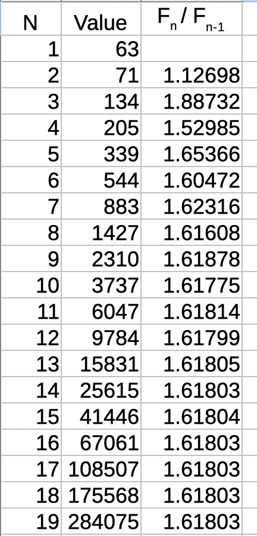
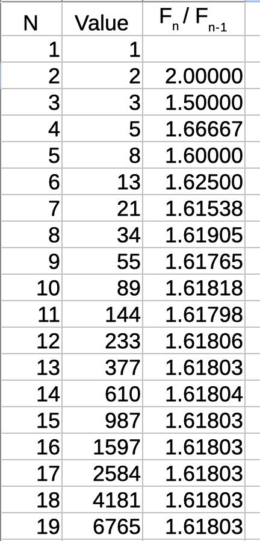
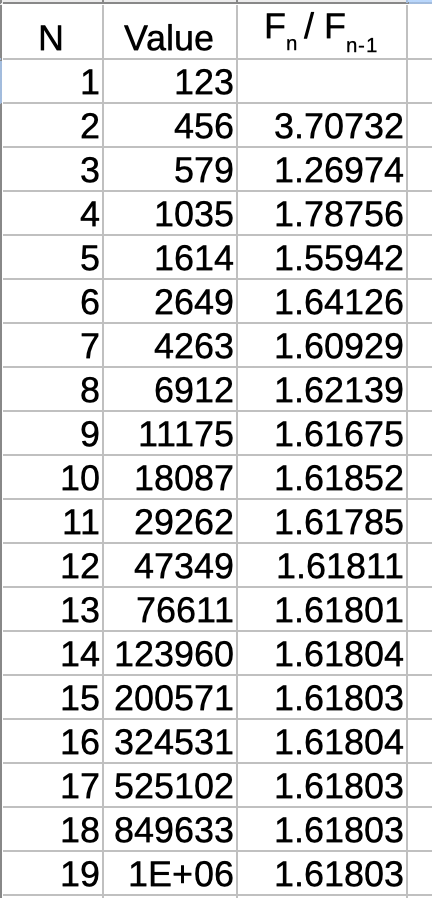
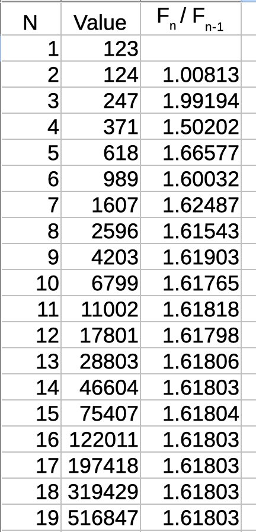
Above are 4 runs with different starting values. As you can see, there is nothing special about starting the sequence with 1 and 1. All the sequences eventually end up with the same ratio: 1.61803. So we can conclude that the "Golden Ratio" is really determined by the algorithm of adding the two previous numbers in order to get the next one.
I stated previously that the "Golden Ratio" calculated in the spreadsheets was rounded off to five decimal places. Is there a more compact way to express this number? Yes, if you are willing to do some 7th grade math. If you are not capable of following 7th grade math, then skip to the next section.
Caution — 7th Grade Math Ahead!
Upon entering the following section, you may experience one or more of the following symptoms: dry mouth, nausea, vomiting, diarrhea, shortness of breath, sweating or wet palms, loss of self confidence, suicide attempts, or erectile dysfunction. If you experience any of these side effects, consult your 7th grade math teacher immediately.
For those of you that are still with me, let's do some analysis on the algorithm that forms the basis of
the Fibonacci sequence. We started with the assumption of how an element in the sequence is found by
taking the sum of the previous two elements. That assumption was written mathematically as:
Fn = Fn-1 + Fn-2
And we want to find the ratio of Fn / Fn-1.
Let's call R the ratio of any two consecutive elements in the sequence, as long as the larger
of the two numbers is in the numerator.
So R = Fn / Fn-1
Let's use our assumption equation for the calculation of R. In the numerator substitute for Fn:
R = (Fn-1 + Fn-2) / Fn-1 or
R = 1 + Fn-2 / Fn-1
Notice that the second term, Fn-2 / Fn-1 is just 1 / R
So our calculation for R now looks like:
R = 1 + 1/R
Multiply both sides of this equation by R:
R2 = R + 1
Bring all terms to the left-hand side:
R2 − R − 1 = 0 (This is a quadratic equation)
The solutions of the quadratic equation for R are:
[−(−1) ± √ (−1)2 − 4×1×(−1) ] / (2×1)
= [1 ± √ 1 + 4 ] / 2
= [1 ± √ 5 ] / 2
We can throw out the minus solution because we only want positive solutions. So we have a compact
way of expressing the "Golden Ratio":
R = [1 + √ 5 ] / 2
You can confirm using a calculator that this expression to 5 decimal places is indeed 1.61803. Keep that
expression in mind as it will appear at times unexpectedly.
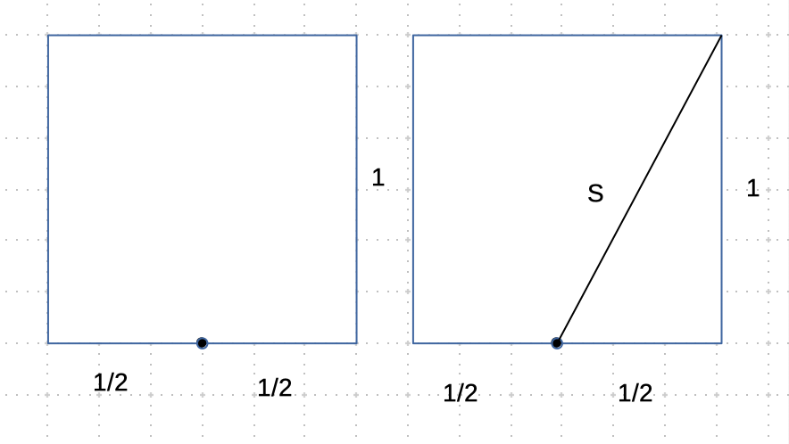
We were able to compute the value of the Golden Ratio using Fibonacci elements. Now we will step away from rabbits and even from the Fibonacci sequence for a moment and find another completely geometrical way to compute the Golden Ratio.
In the image on the left, start with a unit square (a square whose sides all measure 1 unit). Find
the middle of the bottom side and put a point there. This point divides the bottom side of the square
into two equal line segments, each of length 1/2 unit.
From that middle point on the bottom side of the square draw a line up to the upper right corner of the
square. Label the line with the name S. What is the length of that line S?
Notice that the base of the square, the right side of the square, and the line S form a right triangle where
S is the hypotenuse. You know from geometry that the length of the hypotenuse is the square root of the
sum of the squares of the sides. So:
S = √ (1/2)2 + 12
= √ 1/4 + 1
= √ 5/4
= √ 5 / 2
Interesting — there is that square root of 5 again. But that is not the Golden Ratio.
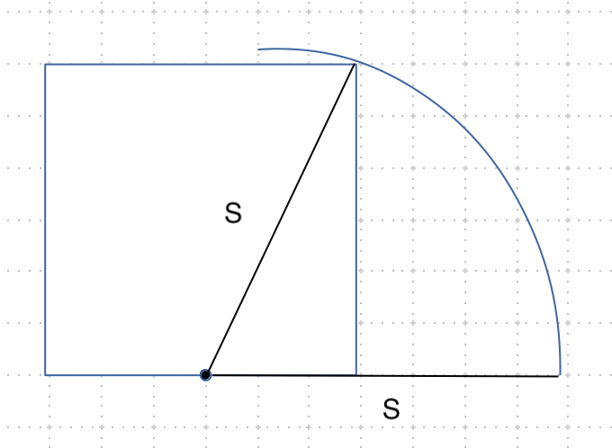
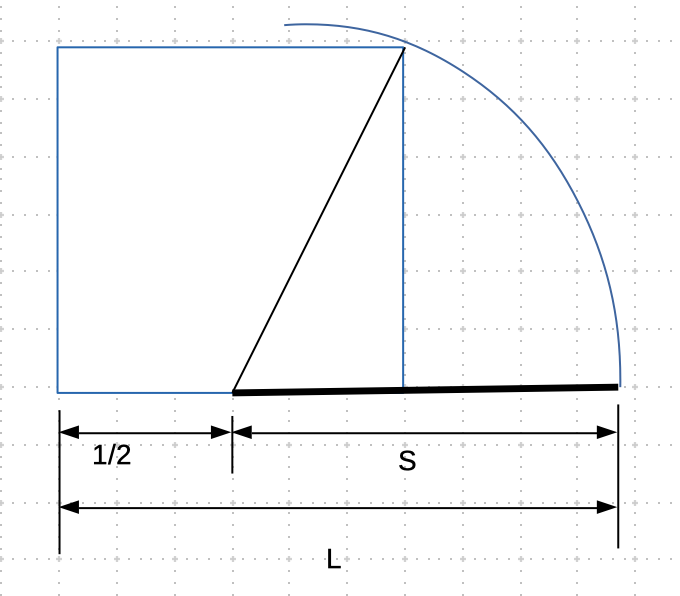
Using the line S as a radius of a circle and the point on the bottom side of the square as a center, draw a circle. Extend the base of the square so that it intersects the circle. (Image upper left)
Now here is a thrill of discovery: Find the length of the line L that runs from the lower left corner of the square out to where the circle intersects the extended base of the square. (Image upper right)
L = 1/2 + S
= 1/2 + √ 5 / 2
= [1 + √ 5 ] / 2
If your memory is short, that is unfortunate. You missed the thrill. If you go back to the calculation of the Fibonacci ratio, you see that this result above is exactly the same value. We have computed the Golden Ratio in a completely different and independent way! Now you may have an idea why the number [1 + √ 5 ] / 2 is called the Golden Ratio.
Keep in mind that this geometric calculation has been around for over 2,500 years at least in the west. Who knows how long ago it was developed in India. We (the west) not only borrowed the ideas of numeric symbols 0–9 and the decimal place system, but we also borrowed the way to calculate the magnitude of the hypotenuse of a right triangle.
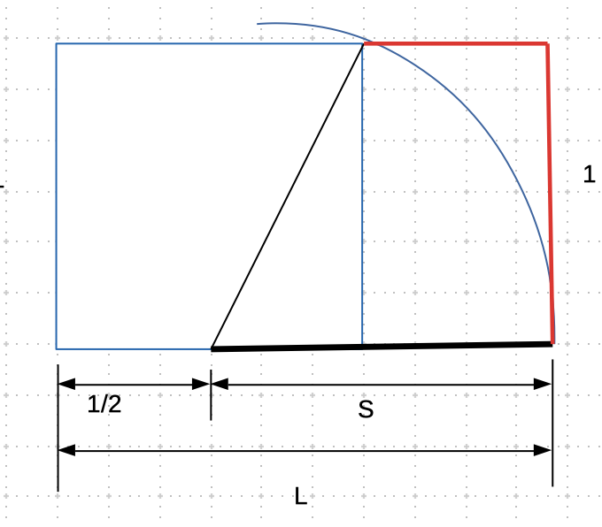
If we were to extend the width of our original 1×1 square so that the new width is [1 + √ 5 ] / 2 units wide, we have what is called a Golden Rectangle. This term is fitting because the ratio of the longer side to the smaller side is the Golden Ratio.
To demonstrate how revered is the Golden Rectangle and Golden Ratio, we only have to look at architecture.
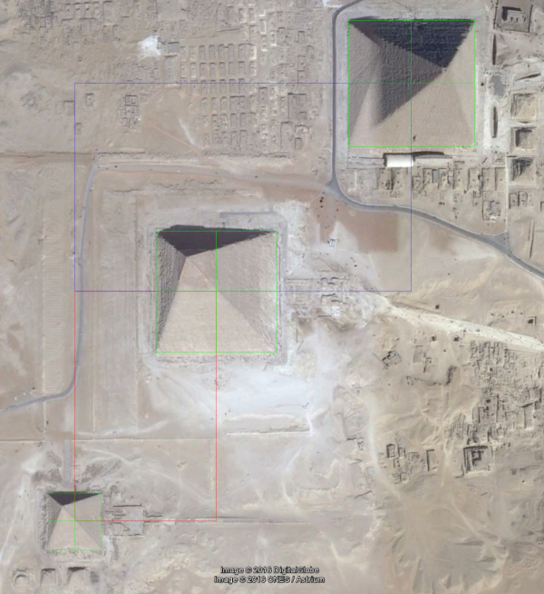
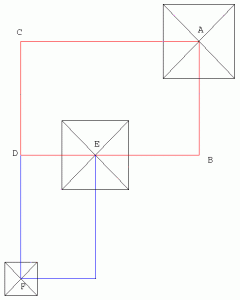
The images above show the layouts of the three pyramids at Giza. The image above left is the satellite image of the pyramids and the image above right shows the locations of the three pyramids as they fit on the corners of two Golden Rectangles. Since these pyramids were built over 4,500 years ago, this is a remarkable coincidence — or deliberate design.
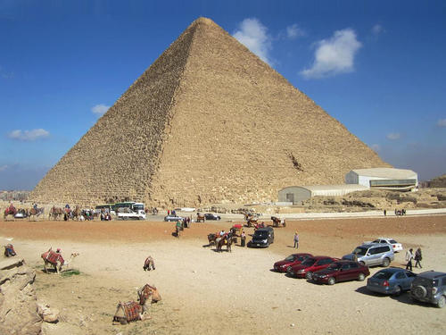
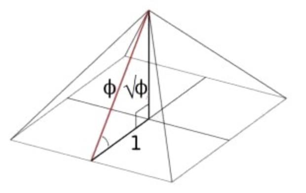
The image above left shows the Great Pyramid of Egypt. The height of the pyramid is 146.7 meters. Its base, a square, measures 230.34 meters per side. Keep in mind that these measurements are of the pyramid infrastructure. The outer cover of the pyramid has been weathered away so that the actual dimensions of the finished product would be slightly larger. The image above right shows a schematic of three important dimensions of the pyramid. In the image, the Golden Ratio is shown by the symbol Φ. The three important dimensions are:
- One half of the square base of the pyramid, which is 1 unit.
- The height of the pyramid, which is denoted by √ Φ .
- The distance from the midpoint of one of the base's sides up to the very top of the pyramid, which is denoted by Φ.
Let's use the measured dimensions of the height and base of the pyramid to calculate the ratio of the square root of
the height to 1/2 of the base size:
√ 146.5 / (230.4 / 2)
= 1.274
= √ Φ
So Φ = 1.617
This ratio is very close to that of the Golden Ratio that we calculated before (1.618). This calculation is within 0.06%
of the Golden Ratio. Since there are no written records of the building plans for the pyramids, we do not know for sure that
they actually planned the buildings with the Golden Ratio in mind. But it would be an unlikely coincidence that these dimensions
fit the Golden Ratio.
If you would like to reconstruct your own Golden Ratio based pyramid, use this link and print out the template. Then just fold along the lines.
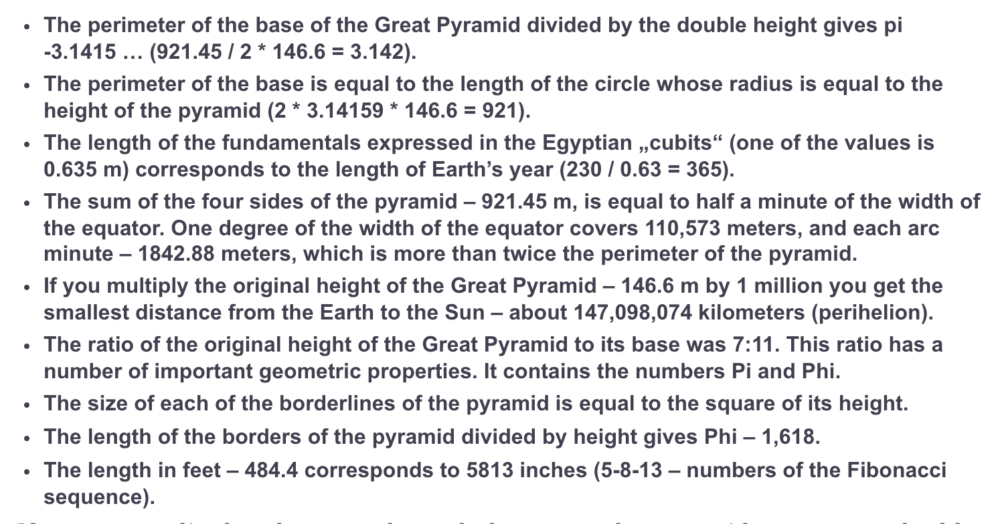
If you like facts done to the extreme, read some of these other calculations shown on the image left. Do not forget here that some of these corresponding calculations are coincidences, not purposeful designs of the pyramids.
Incidentally if you like these kinds of coincidence calculations try the collection of facts about the number 42 that started with a simple comment in the film The Hitchhiker's Guide to the Galaxy. The author, Douglas Adams wrote: "The answer to the ultimate question of life, the universe and everything is 42."
It should be apparent that since the Egyptians were using the Golden Ratio at least 3,500 years before Fibonacci did his work on rabbits, the Golden Ratio that his sequence produces is just another angle by which this seemingly universal number can be arrived at. What you should take away from learning about the Fibonacci sequence is that he did not invent the number sequence with the Golden Ratio in mind. Instead he was calculating rabbit populations and just happened to invent another way to calculate the Golden Ratio. This is usually how science works.
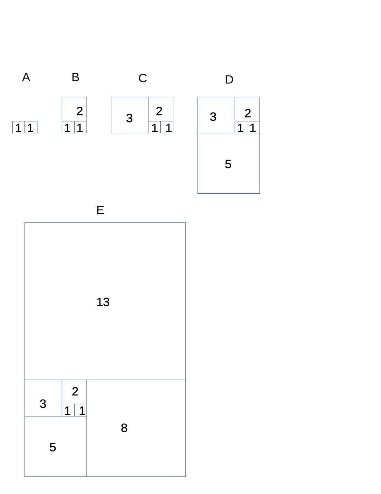
There is another unintended consequence of Fibonacci's Sequence. Please get a piece of paper and pencil and follow along with this simple experiment. We are going to follow the steps shown in the image right, starting at step A and finishing at step E.
- Start by drawing two adjacent squares of some small size. We will call the size of each small square 1 unit.
- On top of the two 1-unit squares, draw another square whose base is the same as the combined sizes of the two 1-unit squares. The new square will be 2 units.
- To the left of the 1- and 2-unit squares, draw a square whose base equals the combined sizes of the 2-unit and 1-unit squares. The new square will be 3 units.
- Below the 3-unit square, draw a square whose base equals the combined sizes of the 2-unit and 3-unit squares. The new square will be 5 units.
- To the right of the 5-unit square, draw a square whose base equals the combined sizes of the 5-unit and 3-unit squares. The new square will be 8 units.
- If you still have enough paper left, above the 8-unit square, draw a square whose base equals the combined sizes of the 8-unit and 5-unit squares. The new square will be 13 units.
You can see that we have drawn squares of the sizes: 1, 1, 2, 3, 5, 8, 13 — which are just the first 7 Fibonacci elements. Notice that the size of each square is just the sum of the two previous squares. This is just the same Fibonacci algorithm applied to drawing squares. Notice that as we add more squares, overall the combined squares form a large rectangle. The large rectangle formed by combining all the smaller squares would grow from 1×1, 2×1, 3×2, 5×3, 8×5, and 21×13.
The last rectangle formed in our drawing has a size of 21×13. Its ratio of the two sides is 1.615, a little short of the Golden Ratio. But remember that we needed to go out to about the 15th Fibonacci number in order to get closer to the Golden Ratio of [1 + √ 5 ] / 2. We only had room to draw about 7 squares.
If we had enough space on the paper, we could draw more squares. Imagine for a moment that we were able to draw another 8 squares. That would give the last two squares sizes of 610 and 377 units. Their ratio, of course, is the Golden Ratio of 1.618. The large rectangle formed by all the squares combined would be a Golden Rectangle.
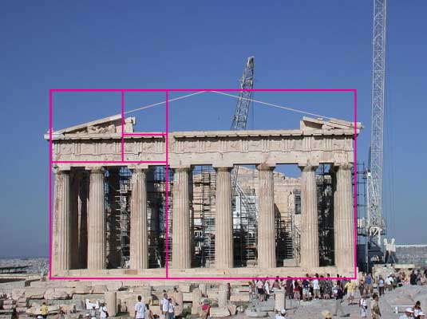
Now that you know how to create Golden Rectangles out of Fibonacci numbers, have a look at the image on the left. We see a picture of the Greek Parthenon. Superimposed over the image are the familiar Fibonacci squares. The Parthenon is stuffed full of these kinds of references to the Golden Rectangle.
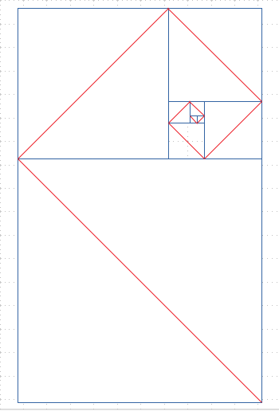
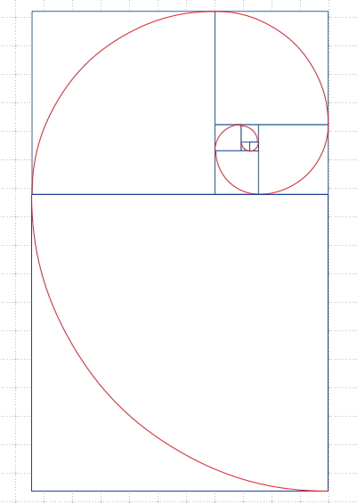
Let's return to the relationship of Fibonacci numbers and the squares that we generated before. This time, connect all the diagonals (shown in red) of the squares as shown in the figure upper left. You can see that the diagonals get longer for each larger square. Now if we replace the red diagonals with red arcs, we get a nice spiral as seen in the upper right image. This spiral is called the Fibonacci Spiral. You can recognize the construction of the spiral as the drawing on Sheldon's shirt at the top of this article.
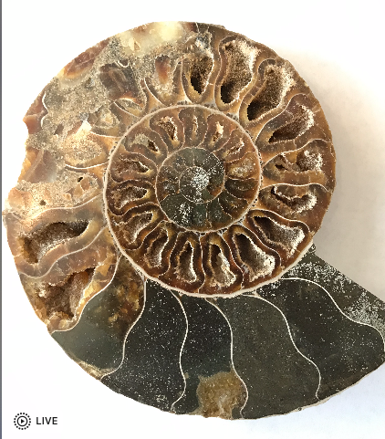
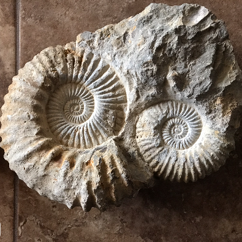
Sometimes nature imitates mathematics. The above two images show a fossil called an Ammonite. What really stands out in these images is an approximation to the Fibonacci Spiral. What is amazing about the spiral in the Ammonites is that even though each hollow chamber has irregular dimensions, the boundary that forms each layer of chambers is a perfect spiral.
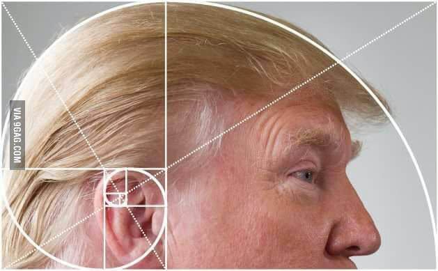
Sometimes mathematics imitates comedy.